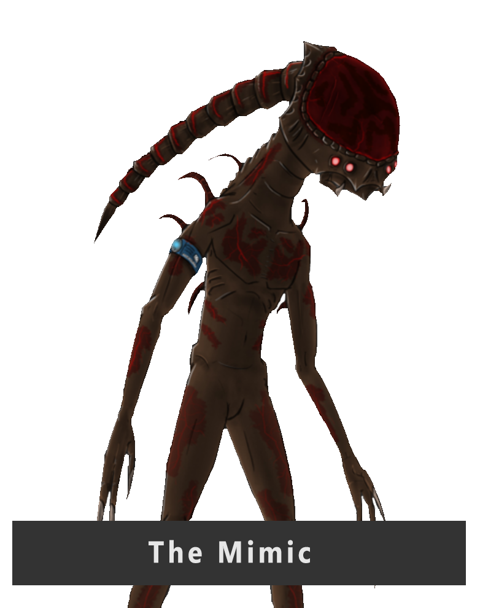

THE MIMIC
TEST TEXT TEST TEXTTEST TEXTTEST TEXTTEST TEXTTEST TEXTTEST TEXTTEST TEXTTEST TEXTTEST TEXTTEST TEXTTEST TEXT
Alone on an alien world, the Engineer is in a fight for survival, rescue is on the way but he can’t let his pursuer escape with him. Using the resources of the science base he must find a way to escape his Mimic but there are many puzzles and challenges to overcome on the way.

The apex predator, a perfect hunter, the Mimic gets inside its prey’s head to make them hunt themselves down. The Mimic ‘mimics’ every movement and forms a bond between itself and its prey, if the Mimic dies so does its prey. There is no way to escape its constant presence, eventually you will make a wrong turn and the Mimic will be there.
Earth's Nearest neighbouring star system, it contains a barely habitable world, Proxima Centauri B. This is the Mimics home world, tidally locked and orbiting close to its parent star. One side of the planet is always night and other always day. A band of life exists where light meet darks around the planets edge, due the unusually strong but erratic magnetic field of the planet, life here has developed unlike anything known to man. This makes it the perfect planet for Earth's first deep space research station.
Constructed over many years by unmanned landers, the science base is finally ready to be inhabited by humans. A long-term study missions will see experts in 6 fields study the planet in every detail, especially the unusual life forms on the surface. The mission includes the capture and close-up study of the indigenous creatures, a directive that some of the crew have extreme concern about.